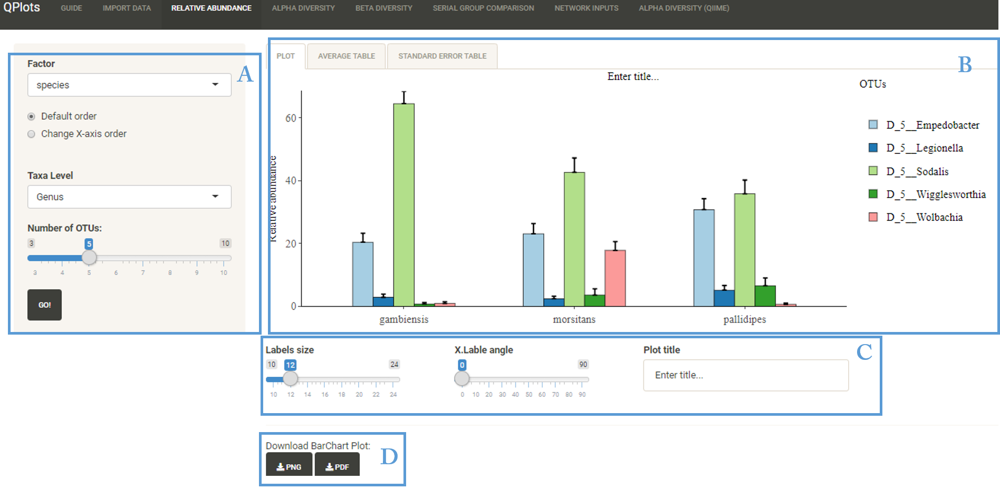

This section aims to explore the most abundance taxon based on the relative abundance values.
User Interface

- A: Dynamic Input
- B: Output: Contains Barplot, average table and Standard error table
- C: Customize Barplot: Labels size, x.axis angle and plot title
- D: Download current Barplot in PDF or PNG format
Options
- Factor: Select factor from the categorial variables in mapping file
- Change X-axis order: Change the element's order of the selected factor
- Taxa level: By selecting the taxomony level to visualize, all the OTUs with the same selected level will be combined
- Number of OTUs: Select the number of the most abundance taxon to visualise (max=10)